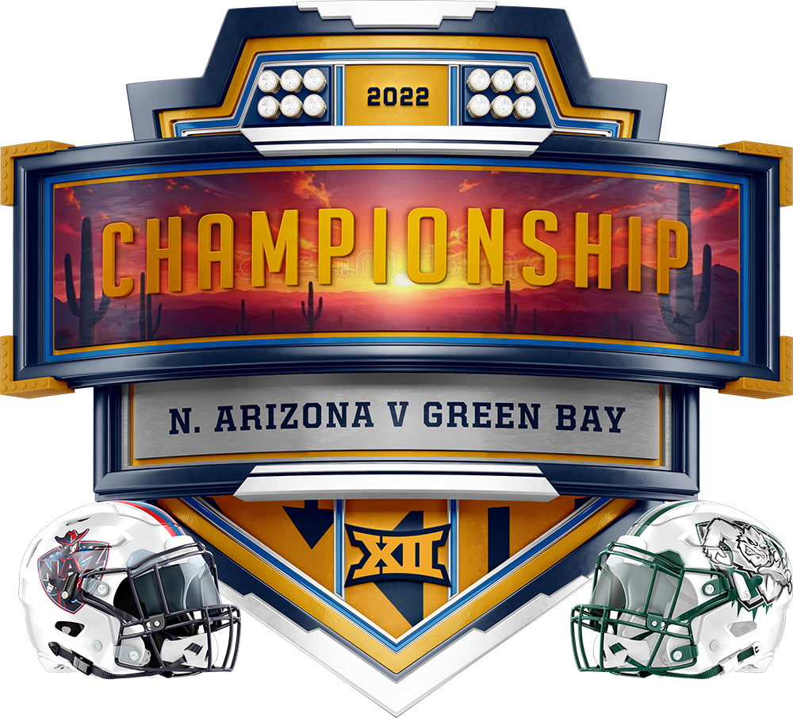

Marking a significant milestone, the 2022 season stands as the 10th anniversary of the GLFL. The kickoff on Thursday, September 8th, 2022, saw the defending champions, the Brooklyn Bolts, engaging in a thrilling encounter the Green Bay Blizzard. The closely contested matchup added a layer of suspense, culminating in a Monday Night Football showdown where QB Russell Wilson aimed to secure the Bolts' victory by accumulating a mere 25 points. In an exhilarating turn of events, Wilson fell short by just 2 points, leading to a narrow 136-134 triumph for the resilient Green Bay Blizzard.
The season's crescendo unfolded on Monday, January 2nd, with the Lakefront Bowl showdown featuring the Green Bay Blizzard and the Northern Arizona Wranglers. In a resounding display of skill and determination, the Blizzard emerged triumphant with a convincing 185-122 victory, etching their name in history with their first-ever championship in team history.
In the lone personnel change of the 2022 season, the Miami Inferno underwent a transition in leadership. Following a one-season stint with Cody Coppersmith in 2021, negotiations for a long-term deal faltered, prompting the Inferno to bring in Adam Levetzow as the new General Manager to guide the team forward.
The 2022 draft marked the league's 10th annual gathering of GLFL General Managers to strategically select eligible football players. This significant event took place in the digital realm on Sunday, August 28, 2022, at 7:00 pm CST. The Boston Brawlers, possessing the coveted first overall pick, made a decisive choice by selecting Jonathan Taylor from the Indianapolis Colts as their first-round selection.
| Pick | GLFL Team | Player | POS | NFL Team |
|---|---|---|---|---|
| 1 | Boston | Jonathan Taylor | RB | IND |
| 2 | Cedar Rapids | Cooper Kupp | WR | LAR |
| 3 | Brooklyn | Christian McCaffrey | RB | CAR |
| 4 | Green Bay | Justin Jefferson | WR | MIN |
| 5 | Miami | Derrick Henry | RB | TEN |
| 6 | Northern Arizona | Austin Ekeler* | RB | LAC |
| 7 | Vegas | Ja'Marr Chase | WR | CIN |
| 8 | Los Angeles | Davante Adams | WR | LV |
| 9 | Philadelphia | Najee Harris | RB | PIT |
| 10 | Cleveland | Dalvin Cook | RB | MIN |
| 11 | Milwaukee | Alvin Kamara | WR | NO |
| 12 | Chicago | CeeDee Lamb | WR | DAL |
*MVP
In the 2022 season, consistency prevailed with no alterations to the schedule format, maintaining a 14-week season encompassing a total of 168 games. Kicking off on the Thursday night following Labor Day, each team engaged in two matchups against division rivals and faced off once against all other teams, unless flexed in the final week.
A notable change from the previous season was the elimination of home field advantage during the regular season after its trial in 2021. Commissioner Bautch clarified that while it did not persist from the prior year, the possibility of its return in future seasons remained open.
Introducing a fresh dimension to team rosters, the league incorporated the individual defensive position (IDP) for the first time in the 2022 season. This decision, subject to lengthy negotiations, materialized as an experimental addition.
Furthermore, the league continued the popular feature of flex scheduling during the concluding week of the regular season. This strategic tool empowered the league to make game changes in the final week, irrespective of division status, influencing the outcomes of divisional championships and playoff seeding.
| East | W | L |
|---|---|---|
| (5) Miami | 8 | 6 |
| Boston | 6 | 8 |
| Brooklyn | 5 | 9 |
| Philadelphia | 1 | 13 |
| Central | W | L |
|---|---|---|
| (3) Cleveland | 8 | 6 |
| (6) Cedar Rapids | 7 | 7 |
| Milwaukee | 6 | 8 |
| Chicago | 6 | 8 |
| West | W | L |
|---|---|---|
| (1) Los Angeles | 12 | 2 |
| (2) Vegas | 11 | 3 |
| (4) Green Bay 🏆 | 8 | 6 |
| (7) Northern Arizona | 6 | 8 |
TThe playoffs for the highly anticipated 2022 season kicked off on December 15, 2022, culminating in the grand finale with the Lakefront Bowl held on January 2nd. A total of seven teams secured coveted playoff spots, with the three division winners claiming playoff positions and the remaining four spots allocated to the four best non-division-winning teams. The playoff structure included a first-round bye exclusively for the #1 seed, intensifying the competition for the remaining teams.
While the regular season saw the elimination of home field advantage, an intriguing twist awaited teams in the postseason. The league opted to double down on home field advantage during the playoffs, granting home teams a significant boost with 10 bonus points to kick off the week, creating an added layer of excitement and strategy in the playoff matchups.
The opening round of the 2022 GLFL playoffs, set in motion on December 15, 2022, delivered thrilling matchups and unexpected outcomes, adding a layer of suspense to the postseason drama. The top-seeded Los Angeles Wildcats enjoyed a bye week, eagerly awaiting their opponents for the next round.
In one of the playoff clashes, divisional rivals Vegas Knight Hawks and Northern Arizona Wranglers faced off, creating an intriguing duel between the #2 and #7 seeds. Despite the Knight Hawks winning their previous encounters, the Wranglers emerged victorious this time, securing a historic 161-152 win. This marked the first instance of a 7-seed advancing to the second round, showcasing the unpredictable nature of playoff football.
The second playoff showdown featured a rematch between division rivals the #3 seed Cleveland Gladiators and the #6 seed Cedar Rapids Titans. The Titans, determined to overcome their earlier defeat, faced a tough battle against the Gladiators. Despite Saquon Barkley's commendable effort, Cleveland's duo of Justin Fields and Dalvin Cook, amassing 56 fantasy points, propelled them to a 143-103 victory. The Gladiators' triumph highlighted the intensity of the postseason competition.
In the final game of the weekend, the Green Bay Blizzard visited the Miami Inferno in a faceoff between the 4th and 5th seeds. Green Bay, seeking to replicate their regular-season success, entered the matchup as a 20-point favorite before factoring in home field advantage. The Inferno, already disadvantaged by the absence of their starting QB Lamar Jackson, struggled with Tyler Huntley at the helm, who managed only 5 fantasy points. The Blizzard dominated the game, securing a decisive 156-108 victory and advancing to the second round, where they would face top-seeded Los Angeles.
Round 2 of the 2022 GLFL playoffs, held on December 22, 2022, unfolded with intense matchups and surprising outcomes, setting the stage for an exhilarating championship showdown.
In the first game of the weekend, the top-seeded Los Angeles Wildcats faced off against the Green Bay Blizzard, the #4 seed. The anticipated clash was projected to be closely contested, with the Wildcats holding a slim 3-point projected win. However, a late-season injury to star player Deebo Samuel significantly impacted Los Angeles's offensive dynamics. The Blizzard capitalized on this vulnerability, securing a resounding 139-117 victory and earning their ticket to the Lakefront Bowl game. Every offensive player for the Wildcats fell short of their projected points, including star QB Josh Allen, who finished with just 28 points. In contrast, the Blizzard's trio of Daniel Jones, Jalen Waddle, and the Rams Defense each scored 25 or more points, leading the team to a convincing win.
The second game of the weekend witnessed the Northern Arizona Wranglers traveling to Cleveland to face the #3 seed Gladiators. The Wranglers, fueled by their Cinderella postseason run, continued their impressive performance, defeating the Gladiators 162-112. Led by standout performances from Joe Burrow and DeVonta Smith, both contributing 31 fantasy points each, and James Conner adding 25 fantasy points, the Wranglers dominated the game. Notably, the decision to bench MVP Austin Ekeler did not hinder the Wranglers' success, with even kicker Brett Maher chipping in with 18 fantasy points. This victory marked Northern Arizona's first-ever trip to the Lakefront Bowl, adding an exciting element to their postseason journey.
The culmination of the 2022 GLFL season unfolded in Glendale, Arizona in the highly anticipated championship clash between the Green Bay Blizzard and the Northern Arizona Wranglers on January 2, 2023. The Blizzard entered the matchup as a 5-point favorite over the #7 seed Wranglers, who had embarked on a magical postseason run, defeating the #2 and #3 seeds to become the lowest seed ever to reach the Lakefront Bowl. However, their remarkable journey came to an end against the formidable Green Bay squad, as the Blizzard secured a commanding 185-128 victory. This triumph marked Green Bay's first Lakefront Bowl.
The championship game wasn't without its share of controversy. Damar Hamlin of the Buffalo Bills suffered a cardiac arrest on the field, leading to uncertainty surrounding the game against the Bengals. After a prolonged delay, the game was eventually stopped. Throughout the week, questions loomed about whether the game would be resumed, and it was ultimately canceled. This development resulted in the Wranglers' starting QB finishing with 0 points. While the game's outcome was already in favor of the Blizzard, Burrow would have needed a staggering 63.6 points just to tie the game.
With the championship secured, the Blizzard added another milestone to their history. After making it to the first-ever Lakefront Bowl in 2012 and losing to the Wildcats, who they ironically defeated to reach the game this year, the Blizzard claimed victory. Daniel Jones continued to shine, scoring 42 points, while Mike Evans delivered an outstanding 49-point performance. Christian McCaffrey rounded out the top three scorers for Green Bay with 31 fantasy points. In a remarkable achievement, Mason Bautch became the youngest GM in GLFL history to secure a championship.
In the culmination of the 2022 GLFL season, several teams and individuals stood out, making their mark in the league's rich history.
Cleveland, Los Angeles and Miami each claimed their record-tying fourth division titles during the 2022 season.
Sixth overall pick, RB Austin Eckeler emerged as the standout player, earning the 2022 league MVP for leading the league with an impressive 380 fantasy points. His contributions were pivotal in guiding the Conference Champion Northern Arizona Wranglers to their first-ever Lakefront Bowl game.
The award for GM of the Year went to Liz Bautch of the Los Angeles Wildcats, who orchestrated a remarkable season with a league-best 12-2 record. Despite her considerable success throughout her career, this marked Liz Bautch's first time receiving the prestigious award.
Green Bay added more accolades to their legacy by winning their second conference championship and securing their first league championship. Meanwhile, Northern Arizona celebrated their first-ever conference championship.
These achievements underscored the remarkable performances and contributions of teams and individuals in the 2022 GLFL season.